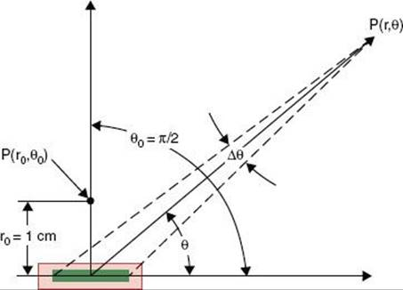

Chapter 15 Brachytherapy
knitr::include_url(https://doctorlib.info/oncology/principles-practice-radiation-oncology/22.html, height=“600px”)
According to ICRU 38 (1985), the dose rate of intracavity brachytherapy, defined at the reference point (?), can be categorized a: 0.4-2.0 Gy/h;
15.1 Isotopes12
| Isotope | \(T_{1/2}\) (days) | Median E (KeV) | HVL (mm lead) | usage |
|---|---|---|---|---|
| I-125 | 60 | 28 | 0.025 | prostate implants (23), eye plaques |
| Pd-103 | 17 | 22 | 0.01 | prostate implants (23) |
| Cs-131 | 10 | 29 | - | intracavitary BT of uterine cervix |
| Cs-137 | 30 years | 660 | 5.5 | - |
| Ir-192 | 74 | 400 | 2.5 | interstitial implantation (in ribbon) |
| Au-198 | 2.5 | 400 | 2.5 | eye plaque |
| Y90 (\(\beta\) emitter) | 2.67 | 937 | - | liver radioembolism |
Form the NIST table (https://physics.nist.gov/PhysRefData/XrayMassCoef/ComTab/water.html), the total attenuation coefficients in water are about 0.38, 0.1, and 0.09 cm-1 for the photon energies of 30 (I-125), 400 (Au-198 and Ir-192), and 600 KeV (Cs-137), respectively.
15.2 Air kerma strength
TG-32 (1987) “Specification of brachytherapy source strength”
The AAPM recommends the \(\color{Green} {air\ kerma\ strength}\) (\(S_k\)) for the specification of brachytherapy sources. It is defined as the air kerma rate at a reference distance (e.g. 1 m) from the source center along the perpendicular bisector. The air kerma strength is related to the quantity exposure rate by
\[\begin{equation} S_k = \dot X(d) \cdot \left( \frac{\bar W}{e}\right) \cdot d^2 =\dot K_\delta \cdot d^2 . \tag{15.1} \end{equation}\]- The exposure rate \(\dot X(d)\) is measured using an ion chamber, a “reentrant”-type well chamber, or a dose calibrator supplied with a suitable standard source. The product of \(\dot X(d)\) and d2 is the \(\color{Green} {exposure\ rate\ constant}\) at 1 cm. The
- The term \(\left( \frac{\bar W}{e} \right)\) is the averagy energy to create an ion pair. It is equal to 0.876 cGy/R.
The equation above is a revised definition of air-kerma strength (new cutoff energy 5 keV); experimentally, an aluminum filter is put in front of NIST wide angle free-air chamber (WAFAC) to get rid of photons with lower energies.
The unit of air kerma strength is U, and 1 U = 1 \(\mu\)Gym2/hr = 1 cGym2/hr. The air kerma strength and \(\color{Green} {apparent\ activity}\) conversion is 1 U = 0.348, 0.243, 0.486, 0.787, and 0.773 mCi for 137Cs, 192Ir, 198Au, 125I, and 103Pd, respectively.
| Quantity | Symbol | Trad.unit | SI.unit | Recom.unit |
|---|---|---|---|---|
| Activity | A | mCi | Bq | MBq |
| Exposure | X | R | C/kg | - |
| Air kerma | K | rad | Gy | Gy |
| Air kerma Strength | S | rad\(\cdot\)cm2/hr | Gym2/s | \(\mu\)Gy\(\cdot\)m2/hr |
| Exposure rate constant | \((\Gamma_{\delta})_X\) | R\(\cdot\)cm2/(mCi\(\cdot\)h) | Gy\(\cdot\)m2/(Bq\(\cdot\)s) | - |
15.3 Traceability
Calibrations of brachytherapy sources should be directly traced to NIST or to an Accredited Dosimetry Calibration Laboratory (ADCL) which is traced to NIST. Normally, we don’t send sources to NIST or ADCL, but instead a well chamber with specific inserts designed for different isotopes. To calibrate Bard PS-1251L I-125 sources, for instance, the well chamber with an I-125 insert will be used, which was checked using Bard PS-1251L I-125 sources at NIST or ADLC.
TG-40
- all long half-life sources should be calibrated;
- at least 10% or 2 ribbons (whichever is larger) should be calibrated for a large number of loose seeds with short half-life.
If the institution’s verification of source strength disagrees with the manufacturer’s data by more than 3%, the source of the disagreement should be investigated. We further recommend that an unresolved disparity exceeding 5% should be reported to the manufacturer.
15.4 TG-43
 \[\begin{equation} \dot D(r, \theta) = \Lambda\cdot S_k \frac{G_L(r, \theta)}{G_L(r=1cm,\theta=90^o)} \cdot g_L(r, \theta)\cdot F(r,\theta), \tag{15.2} \end{equation}\]where
- r denotes the distance (cm) from the center of the active source to the point of interest;
- \(\theta\) is the point of interest relative to the source longitudinal axis;
- \(\Lambda\) is the exposure dose rate constan`, \(\Lambda = \frac{\Lambda_{MC}+\Lambda_{exp}}{2}\);
- Sk is the air kerma stregth;
- \(G_L(r,\theta)\) is \(\color{Green} {geometry\ function}\), which is equal to 1/r2 for point source approximation. It neglects scattering and attenuation, and provides an effective inverse square-law correction.
- \(g_L(r)\) is \(\color{Green} {radial\ dose\ function}\), \(g(r) = \frac{D(r,90^o)}{G(r,\theta_0)}/\frac{D(r_0,90^o}{G(r_0, \theta_0)}\). It accounts for the fall-off of dose along the transverse axis as a result of attenuation and scattering in the medium, capsule filtration, and self-absorption.
- \(F(r,\theta)\) is the \(\color{Green} {anisotropy\ function}\), \(F(r,\theta) = \frac{\dot D(r,\theta)}{G(r,\theta)}/\frac{\dot D(r_0,\theta_0)}{G(r_0, \theta_0)}\). It accounts for anisotropy of dose distribution around the source, including effects of absorption and scatter in medium, i.e., self-filtration in source, oblique filtration in walls, scattering and absorption in tissue. In TG-43U, typically calculated from Monte Carlo.
Other TG 43 updates include 1) eliminating apparent activity for specification of source strength, 2) eliminating the anisotropy constant in favor of the distance dependent 1-D anisotropy function, \(\phi_an(r)\), and 3) providing guidance on extrapolating tabulated TG-43 parameters to longer and shorter distance
In brachytherapy there is a rapid falloff in dose as distance from the source increases due to inverse square law. The dose within the tumor may much different from the prescription dose, thus the concept of equivalent uniform dose (EUD) was introduced by Dale et al. (1997). Mathematically, the generalized EUD is defined as \[EUD= \left( \sum \nu_iD^a_i \right ) ^{1/a}\]
Here \(\nu_i\) is the fractional organ volume receiving a dose \(D_i\) and a is a tissue-specific parameter that describes the volume effect.
- \(a \rightarrow –\infty\), EUD = minimum dose;
- \(a \rightarrow –\infty\), EUD = maximum dose (serial organs);
- a = 1, EUD = mean dose;
- a = 2, EUD = RMS dose.
The EUD model is parameterized by the single biological parameter a, which should be chosen so that the EUD reflects the intended biological properties for the given tumor or organ. Parameter a and the Lyman model parameter n are related by a = 1/n Tumor: a is a negative number (e.g., a = −15) Normal tissues: a is a positive number
The volume-effect: very small normal tissue volumes (e.g. 1-2 cm3) can tolerate very high doses that larger volumes would not tolerate. There are a few exceptions to this such as spinal cord, though the dose as high as 167.3 Gy to the cord has been reported in very low dose rate brachytherapy of paraspinal tumor. Rogers et al. (2002) reported that the mean cord dose was 72.5 Gy (ranging: 53.1-167.3 Gy), combining the EBRT and I-125 brachytherapy.
15.5 Solutions
Q1 d)
As \(D = \dot D\times\Delta t\), \(\frac{\Delta t_{new}}{\Delta t_{old}}=\frac{\dot D_{old}}{\dot D_{new}} = \frac{A_{old}}{A_{new}} = \frac{A_0e^{-10/30}}{A_0} = 0.79\)
Q2 Shielding b)
Although the average energy of 60Co is higher than that of 226Ra, there are gamma rays of 1.76 and 2.2 MeV emitted from 226Ra sources. In shielding design, we need to consider their existence (although their contribution is small) and thus HVL for 226Ra is greater than HVL for 60Co.13
Q3 a) b) c) A 137Cs source is normally used for consistence check (like linac monthly QA) but not calibration.
Q4 a) Like external beam radiotherapy, the inverse square law is always the biggest factor for dose calculation.
Q5 a) Should c) and d) be correct?
Q6 Initial dose rate c)
The prescription dose or total dose for an prostate implant is \[ D = \int^{\infty}_0 \dot D_0 \cdot e^{-\frac{0.693}{T_{1/2}}t}dt \] Using an important definite integral,\(\int^{\infty}_0 e^{-ax} dx = \frac{1}{a}\), we can find that \[
D = \dot D_0 \cdot \frac{T_{1/2}}{0.693} \rightarrow \dot D_0 = \frac{D}{59.4/0.693}=\frac{14400 \text{ cGy} \times 0.693}{59.4 \text{ days} \times 24 \text{ hours/day}} = \boxed{7.0\text{ cGy/hr}}
\] Q7 b)
Q8 The Paterson-Parker system c)
Q9 The Quimby system a)
Q10 The Paris system c) d)